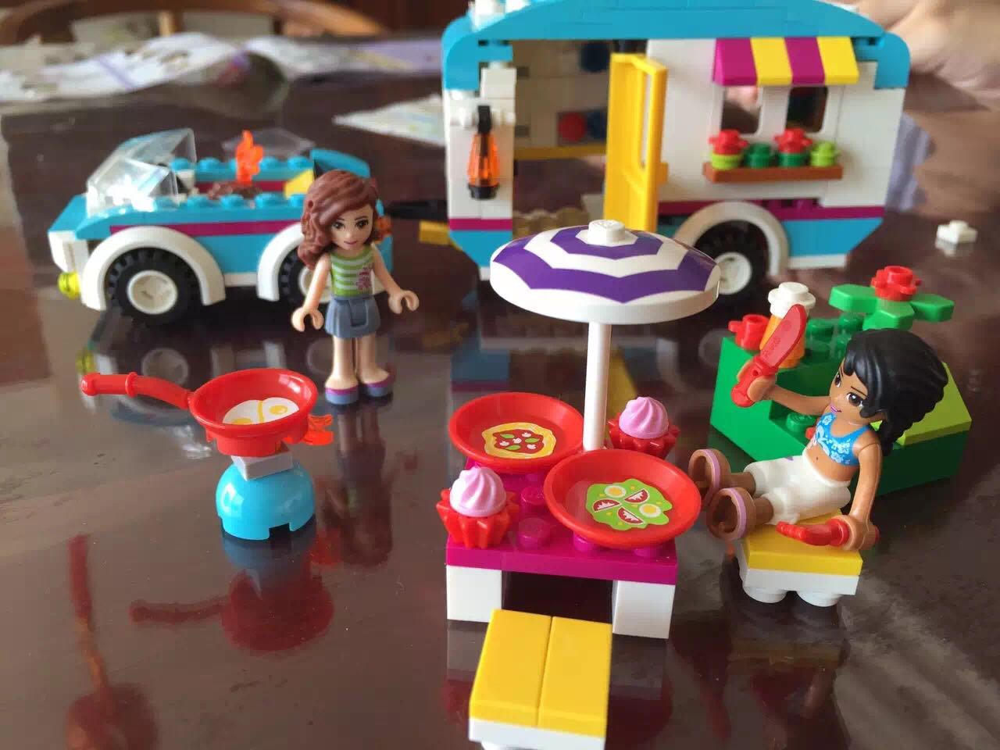
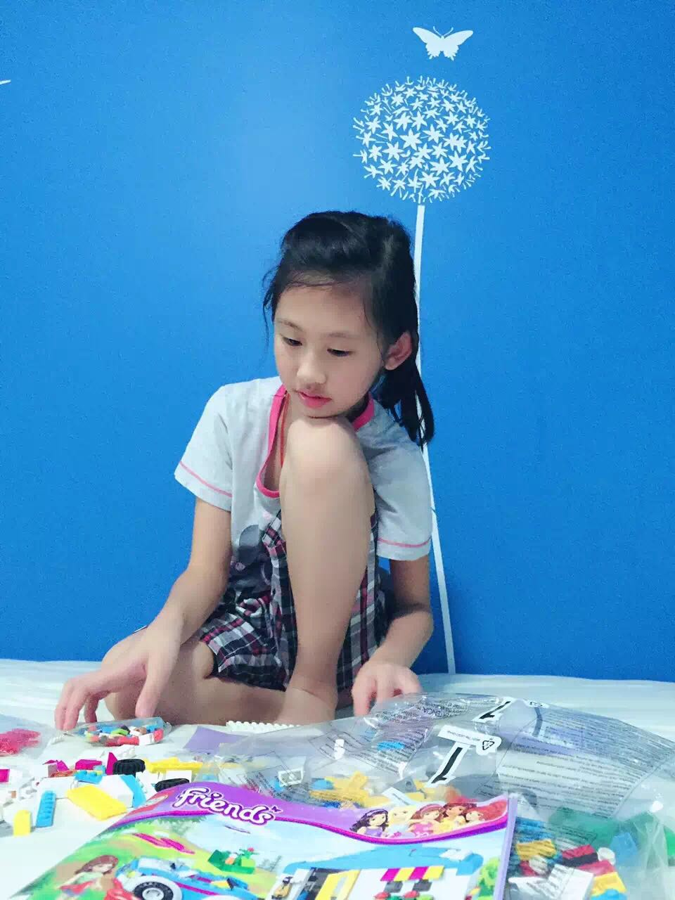
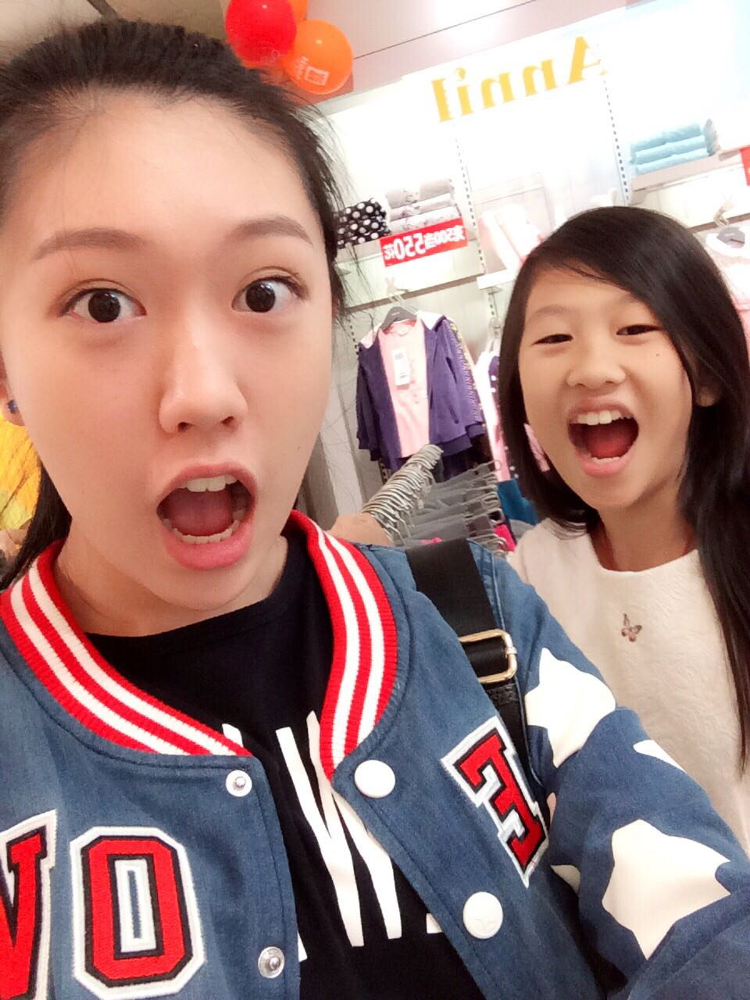
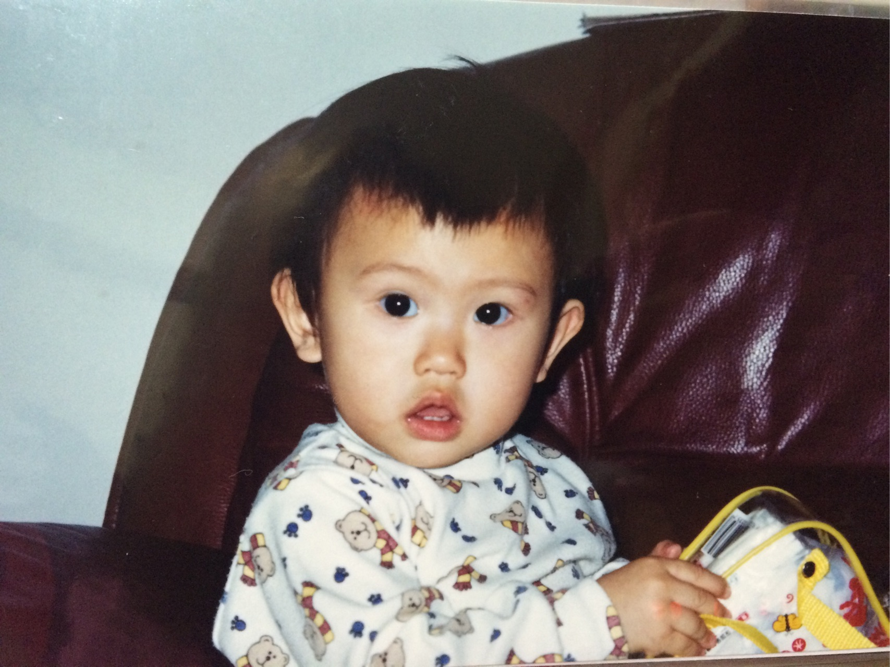
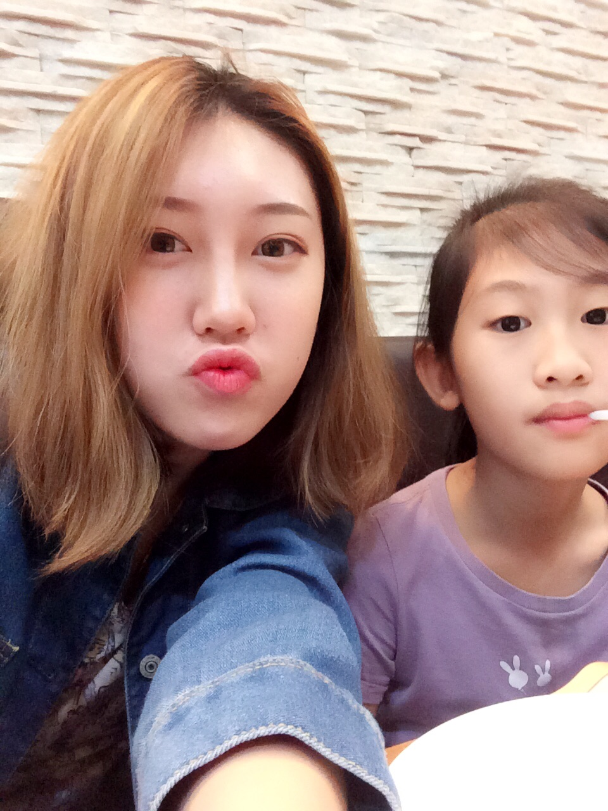

正文:
是这样，现在那么多评论了，收到很多赞同，也有很多质疑，尤其看到一些说“未成年人都敢上知乎骗赞了”。本来不想大动干戈去理会，但是我想了一下，还是发发声。很多关注我的人都说我写的知乎都可以汇集成一本“治人大法”了，在你们心中我的形象是个闹腾的只会和别人斗嘴的小女生，那么现在希望大家看看我的内心声音。
这是今天最新看到的一则。
我的回复：
回复ATTRIB的评论: 亲爱的，这个世界上大把多未成年人的思想和对世界的看法比你们成年人要理智睿智的多。本来看到你这种虽然是成年人但是并没有理性且不讲道理的评论，我准备置之不理的。但是我觉得有必要为现在的年轻人说两句。这个世界并不是你所想的，年纪大的就一定有道理，年纪大的就一定说的对，年纪大的做啥都是正确。很多道理我们年轻人懂得你未必会懂。
一个事情，如果它本质上是对的，无论谁来说，它都是对的；并不是30岁去说就比13岁正确多少。按你的话说，只要过了18岁生日那天晚上我再来知乎你就会比较支持我的回答吗？看到你的评论，我发现这世界上需要更多包容，否则哪来那么多不公和歧视？（别笑，你是年龄歧视ageism）想想你未成年的时候吧，也被别人否定过吧？不被理解吧？那你现在老了，能不能试着理解呢？你可能觉得只是开个玩笑，但是这种想法的出现，是可怕的。
哪怕不赞同，也要学会包容每一个人的想法，这是规矩。—————————————————
治熊孩子得从治熊父母开始！治熊孩子得从治熊父母开始！治熊孩子得从治熊父母开始！重要的事情说三遍！
————————————————
如何根治与预防熊孩子：
http://www.zhihu.com/question/26997559/answer/72330727————————————————
以下原答案。
上个月表妹一家三口来我家玩。小表妹看我妹在拼乐高就跟过来一起玩，玩着玩着表妹吵着一定要那套乐高玩具，我妹自然不高兴（大家都知道正版乐高很贵，而且那套乐高是我用自己做代购的钱给妹妹买的，是我第一次用自己的钱给她买礼物，妹妹很珍惜）
看妹妹鼻子红红的，我忍不住对表妹说，“露露啊，你要喜欢的话呢可以叫你妈妈给你买哦，商场里面都有的。”
结果谁知道表妹居然跑去找她妈妈哭诉！结果她妈妈还一脸居高临下装模做样地“教导”表妹说“姐姐家没我们那么富裕，好不容易给自己妹妹买套玩具你就不要抢了，人家小气咱不能跟着小气” 婶婶接着对我说，“哎呀那你有没有什么其他玩具可以给我们家露露不然她好伤心的！”我苦笑着让她去我房间挑，别拿我妹的，后来把（前）BF送我的正版小黄人给拿走了（想哭）。呵呵我就笑了，合着你用别人家小气的借口就一家家去抢盐抢米你就合法是吧？！
我没和婶婶计较毕竟她是长辈，谁知道表妹表面装着没事了继续和我妹妹玩乐高，结果把乐高小人的头摘下来藏了起来！！！
我实在不忍了，想着怎么治治她，刚好婶婶和我炫耀她的trinity手环是anniversary礼物喔老公送的经典款可贵可贵了blahblahblah，我就说哇哇好漂亮借我戴戴呗！她“开玩笑”说嗯好别搞丢了不然赔不起的哟。过了一会儿趁她不注意我就把手环藏到自己房间里啦（快夸我机智）。
晚上他们要走了，婶婶突然说哎呀我的手环呢，开始疯狂地找，然后质问我。我弹弹袖子，整整衣角，堆起微笑，说，叫你女儿把乐高小人还给我妹妹我就把手环给你。
最后表妹极其不情愿地还了回来，瞪了我一眼，我无比凶狠地瞪了回去hhhhh把她吓到了（眼睛大点有个好处就是翻白眼啊瞪眼的时候特别吓人哈哈哈哈哈）婶婶走的时候脸都是紫的特别搞笑。
治熊孩子真得从治熊父母开始！
下图是失而复得的乐高
我妹研究乐高时
附张我和妹妹的照片！记得点赞！！

——————————————————
以下是答主小时候，从小眼大，并没有整完容回来故意坑我妹，谢谢评论区的一些人“关心”…

非要说我整容我也没办法，我和我妹又不是双胞胎，咋可能一摸一样？
我有证明自己的链接哈哈哈哈哈：
http://www.zhihu.com/question/49480337/answer/119770007时间过得好快 我们都长大不少～

么么哒。